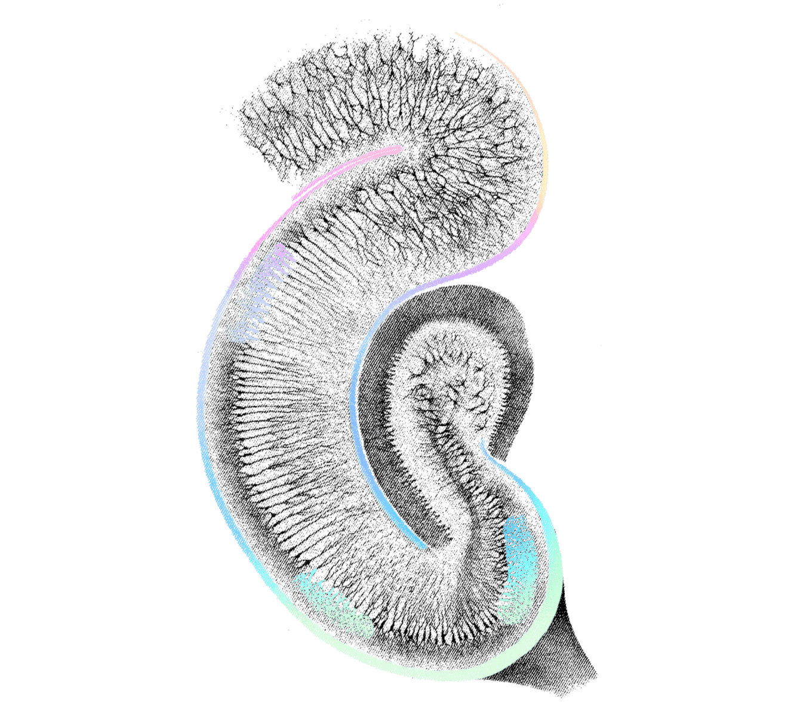

Interfacing with the Brain
A web of communication that allows you to move, think, feel and sense.
A web of communication that allows you to move, think, feel and sense.
Neurons send and receive information. Although neurons come in many different types, they generally have three parts: a dendrite which receives a signal, a cell body called a soma which computes the signal, and an axon which sends a signal out.
The neurons of your brain connect to each other to send and receive signals through axon-dendrite connections called synapses.
Action potentials cause synapses to release neurotransmitters. These small molecules bind to receptors on dendrites, opening channels that cause current to flow across the neuron’s membrane. When a neuron receives the ‘right’ combination of spatiotemporal synaptic input, it initiates an action potential.
We place electrodes near neurons in order to detect action potentials. Recording from many neurons allows us to decode the information represented by those cells. In the movement-related areas of the brain, for example, neurons represent intended movements. There are neurons in the brain that carry information about everything we see, feel, touch, or think.
A web of communication that allows you to move, think, feel and sense.